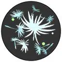

| Attaque | Icône | Description |
|---|---|---|
| Attaque de base |  |
La troisième Attaque de base inflige des dégâts supplémentaires et ralentit les Pokémon ennemis touchés. |
| Talent | Icône | Description |
|---|---|---|
| Effilochage |  | Après un certain seuil de dégâts subit, inflige des dégâts aux ennemis, réduit leur vitesse de déplacement et récupère des HP tout en augmentant sa vitesse de déplacement pendant un court instant. |
| Attaque spéciale 1 | ||
|---|---|---|
| Attaque | Icône | Description |
| Feuillage | Envoie des feuilles qui réduisent la vitesse de déplacement des Pokémon touchés. | |
| Attaque | Icône | Description |
|---|---|---|
| Niveau 4: Boule de Pollen Amélioration au niveau 11 |
Envoie une boule de pollen pouvant s’attacher aux alliés pour les soigner ou aux ennemis pour leur infliger des dégâts. |
| Attaque | Icône | Description |
|---|---|---|
| Niveau 4: Phhytomixeur Amélioration au niveau 11 |
Une tornade de feuilles acérées inflige des dégâts et augmente la vitesse de déplacement des alliés. |
| Attaque spéciale 2 | ||
|---|---|---|
| Attaque | Icône | Description |
| Synthèse | Restaure les HP du lanceur et des alliés à proximité. | |
| Attaque | Icône | Description |
|---|---|---|
| Niveau 6: Cotogarde Amélioration au niveau 13 |
Vous protège ainsi que les alliés proches. Restaure une certain montant de HP à la fin de la protection. |
| Attaque | Icône | Description |
|---|---|---|
| Niveau 6: Spore Coton Amélioration au niveau 13 |
Rassemble des spores autour de lui pour réduire les dégâts subis. Les spores explosent après un certain délai infligeant des dégâts et ralentissant la vitesse des ennemis. |
| Capacité Unite | ||
|---|---|---|
| Attaque | Icône | Description |
| Danse Cotoneuse Débloquage au niveau 9 |
S’envole dans les airs et devient invincible. En déclenchant à nouveau la Capacité, frappe le sol pour blesser et repousser les ennemis tout en restaurant des HP aux alliés. |
|